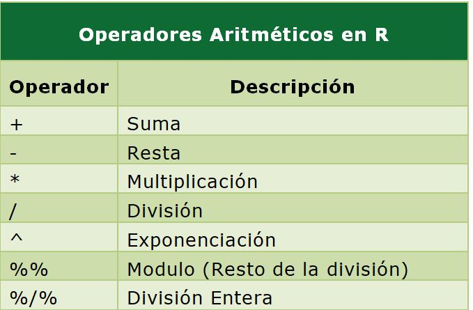

# esto es una línea de comentario y no es tenida en cuenta por el intérpreteIntroducción al lenguaje R
Qué es el lenguaje R?
El sitio oficial r-project.org dice que “R es un entorno de software libre para gráficos y computación estadística. Se compila y se ejecuta en una amplia variedad de plataformas UNIX, Windows y MacOS.”.
Profundizando en su descripción podemos decir, técnicamente, que es un lenguaje de programación interpretado, orientado a objetos, multiplataforma y open source aplicado al manejo de datos estadísticos.
A continuación detallamos cada parte de la definición:
R es un lenguaje de programación estadístico
R es un lenguaje de programación, con sus estructuras y reglas de sintaxis, que posee una gran variedad de funciones desarrolladas con fines estadísticos.
R es un lenguaje Orientado a Objetos
Implementa conceptos de la programación orientada a objetos y esto le permite ser simple y flexible en el manejo de datos. En R todo con lo que trabajamos es considerado un “objeto”: las variables, funciones, datos, resultados, etc. que pueden ser modificados por otros objetos.
R es un lenguaje interpretado
No es necesario compilar los scripts de programación para construir ejecutables sino que directamente se ejecutan por medio del intérprete que devuelve resultados de forma inmediata.
R es multiplataforma (corre en Linux, Windows y Mac)
Funciona en diferentes sistemas operativos como Linux, Windows y Mac.
R es Open Source y se distribuye bajo licencia GNU - GPL
Esto quiere decir que se distribuye gratuitamente bajo licencia GNU (General Public License) – GPL y que los usuarios tienen la libertad de usar, estudiar, compartir (copiar) y modificar el software.
Breve historia
R fue desarrollado a partir del lenguaje S que tiene sus orígenes en Bell Labs de la AT&T (actualmente Lucent Technologies) de mediados de la década del ’70. Posteriormente, S fue vendido y dio origen a una versión propietaria denominada S-Plus que es comercializada por Insighful Corporation.
En 1995 dos profesores de estadística de la Universidad de Auckland, en Nueva Zelanda Ross Ihaka y Robert Gentleman, iniciaron el “Proyecto R”, con la intención de desarrollar un programa estadístico inspirado en el lenguaje S pero de dominio público.
Aunque se dice que R es un dialecto de S existen diferencias importantes en el diseño de ambos lenguajes.
El software está desarrollado en lenguaje C++ con algunas rutinas agregadas en Fortran) y su nombre se debe a la letra con la que inician los nombres de pila de sus autores (Ross y Robert).
Actualmente es mantenido por un grupo internacional de desarrolladores voluntarios denominado Core Development Team.
Scripts
Un script es un archivo de texto plano con una lista secuencial de funciones y comandos del lenguaje R para ser ejecutado por el intérprete de R.
Script se puede traducir como guión, archivo de órdenes, archivo de procesamiento por lotes o archivo de sintaxis.
Generalmente se crea en editores especiales y/o en cualquier procesador básico de texto plano. Se almacena en un archivo que puede ser leído, modificado, guardado y se puede ejecutar completo o línea a línea.
Poseen una cualidad muy provechosa: son re-utilizables, adaptándolos a otras necesidades.
Documentación de los scripts de R:
La documentación es una tarea de mucha importancia en cualquier lenguaje de programación, ya que nos permite entender que estamos haciendo en el script. Además nos sirve para el futuro mantenimiento o para la reutilización del código elaborado, tanto para otros usuarios como para nosotros mismos.
La forma de documentar los scripts de código en R es utilizando comentarios. Toda línea que comienza con el símbolo # es entendido por el interprete como un comentario y los caracteres que sigan a ese símbolo no seran tenidos en cuenta cuando se ejecute ese código.
Así que a la hora de documentar es preferible abusar de estos comentarios que no utilizarlos.
Funciones
Los comandos u órdenes elementales de R se denominan funciones. A algunas se las llama “integradas” porque están incluidas en el núcleo (R base) y sus nombres están reservados.
Tambien podemos utilizar otras pertenecientes a librerías (paquetes) que se pueden instalar y activar.
Toda función tiene un nombre y normalmente recibe argumentos o parámetros que deben ser escritos entre paréntesis y separados por comas. Incluso algunas de ellas que no tienen asociado ningún argumento necesitan finalizar con paréntesis () para ser entendidas como funciones.
Siempre una función devuelve un resultado, un valor o realiza una acción.

Como el interprete de R no permite errores en la sintaxis de las expresiones, debemos atender a los siguientes puntos a la hora de escribirlas:
- La sintaxis habitual de una función y sus argumentos es la siguiente:
funcion(arg1, arg2, arg3,...)- Los títulos de los argumentos pueden escribirse y mediante un igual agregar el valor correspondiente. También se puede omitir el título del argumento y escribir directamente el valor, pero en este caso, hay que respetar el orden definido por la función.
funcion(arg1=32, arg2=5, arg3=65,...)es igual a hacer:
funcion(32, 5, 65,...)siempre que se respete el mismo orden.
- Con los argumentos se deben cumplir las mismas reglas que en todo el lenguaje. Los valores numéricos, lógicos, especiales y objetos van escritos en forma directa y cuando escribimos caracteres (texto) van necesariamente encerrados entre comillas.
funcion(arg1=3, arg2=NA, arg3=TRUE, arg4="less", arg5=x,...)Librerías (paquetes)
Las librerías son grupos de funciones empaquetados que se pueden instalar y utilizar en el análisis de datos. Habitualmente se agrupan por tema o similitud de funciones.
Estos paquetes se pueden descargar directamente del repositorio oficial de CRAN en Internet (similar al uso de los repositorios de Linux) o bien descargar en formato .zip para luego instalar y usar.
Se pueden activar y desactivar en cualquier momento del análisis.
Algunos poseen dependencias de otros paquetes que serán necesarios para que funcione.
Sintaxis, errores y advertencias
El lenguaje es muy preciso en su sintaxis y equivocarse en la forma de escribir una función o cualquier otro objeto produce respuestas de error del interprete de R que es habitual cuando iniciamos el aprendizaje.
La exactitud en la escritura de comandos y funciones incluye la distinción entre mayúsculas y minúsculas. Es decir, que no es lo mismo una ‘a’ que una ‘A’.
Existen tres grupos de mensajes de error:
- error de sintaxis
- error de objeto no encontrado
- otros errores
Se dice que hay un error de sintaxis, cuando ejecutamos una línea de código que el motor de R no puede interpretar debido a que algo está mal escrito.
Habitualmente los errores de sintaxis se deben a que falta o sobra algún elemento necesario en la estructura de una función (comas, parentesis, llaves, corchetes, comillas, etc.)
Por ejemplo la función rep() repite valores una cantidad de veces. Tiene dos argumentos, x donde se coloca el valor a repetir y times donde se define la cantidad de veces.
rep(x = 3, times = 4) #repetimos 4 veces 3 con rep()[1] 3 3 3 3Si nos olvidamos de cerrar el paréntesis…
rep(x = 3, times = 4
Error: Incomplete expression: rep(x = 3, times = 4Si nos olvidamos de separar los argumentos con la coma
rep(x = 3 times = 4)
Error: unexpected symbol in "rep(x =3 times"Si en lugar de escribir x como primer argumento y escribimos otra letra…
rep(y =3, times = 4)
Error in rep(y = 3, times = 4) :
attempt to replicate an object of type 'symbol'Si escribimos mal la función…
REP(x =3, times = 4)
Error in REP(x = 3, times = 4) : no se pudo encontrar la función "rop"Esta última posibilidad es similar a un “objeto no encontrado” por error de sintaxis.
Los mensajes de error en general y sobre todo al principio pueden parecer extraños y difíciles de entender, pero con un poco de práctica podemos inferir donde está el problema.
Los errores de objetos no encontrados pueden tener una de varias causas:
- el nombre no se escribió correctamente (p.ej.: sintaxis, mayúsculas / minúsculas)
- el paquete o archivo que contiene el objeto no ha sido cargado
- olvidamos poner comillas en un lugar que corresponde
- otros motivos posibles
Volvamos al ejemplo anterior, ahora repitiendo un valor tipo character
rep(x = "A", times = 4) #repetimos 4 veces 3 con rep()[1] "A" "A" "A" "A"Si olvidamos las comillas…
rep(x = A, times = 4) #repetimos 4 veces 3 con rep()
Error: objeto 'A' no encontradoAdvertencias
Una advertencia no es algo tan serio, como un error, o al menos no lo parece, ya que esta permite que la función se ejecute igual. Pero puede ocurrir que ignorar una advertencia llegue a ser algo muy serio, si esto implica que la salida de la función es equivocada.
Por lo tanto, es una buena política entender los mensajes de advertencia para ver si indican problemas para preocuparnos o no.
Resumiendo:

Creación de objetos
Todas las declaraciones donde se crean objetos, tienen este símbolo de asignación <-.
nombre_objeto <- valorVeámoslo en un ejemplo:
a <- 1En este caso asignamos el valor 1 al objeto a. El objeto a es un vector de una posición (un solo valor).
Si llamasemos al objeto a, el interprete nos devuelve el valor asignado previamente.
a[1] 1Observemos que además de devolvernos el valor aparece delante un 1 entre corchetes [1].Este número es la ubicación o índice del comienzo del objeto, que en este caso tiene una sola posición.
Estructuras de datos
Los objetos contenedores de datos más simples pertenecen a cinco clases que se denominan atómicas y que son los siguientes tipos de datos:
- integer (números enteros)
- numeric / double (números reales)
- complex (números complejos)
- chacacter (cadena de caracteres)
- logical (lógicos o booleanos – toman valores por si o no)

Sin embargo, cada una de estas clases de datos no se encuentran de manera aislada, sino encapsulados dentro de la clase de objeto operacional más básica del lenguaje a la que se denomina vector.
Vector
Un vector es un conjunto de valores (números o símbolos), todos del mismo tipo ordenados de la forma (elemento 1, elemento 2, … , elemento \(n\)) y \(n\) es la longitud o tamaño del vector.
Surge de la definición dos términos importantes: el tipo y la longitud.
Todos los objetos de datos tienen estos dos atributos intrínsecos.
- el tipo, que puede ser integer, numeric, chacacter, complex y logical
- la longitud, que es el número de elementos que contiene el objeto.
El vector más simple es el que contiene un dato, podría ser numérico de un solo dígito. El tipo sería numeric y la longitud 1.
vec1 <- 1
vec1[1] 1Otro vector más grande por ejemplo podría ser (1,5,2). En este caso también es del tipo numeric pero tiene una longitud de 3 elementos (3 posiciones que integran el vector).
vec2 <- c(1,5,2)
vec2[1] 1 5 2Como vemos, para concatenar estos tres valores numéricos usamos la forma c(). Esta c es una función de R, justamente para concatenar. (todo lo que aparece siempre antes de paréntesis es una función). Dentro de la función los valores van separados por comas.
Aquí podemos señalar otra característica, según la definición de vector, la colección de elementos se encuentra ordenada, por lo que en nuestro ejemplo la primera posición la ocupa el 1, la segunda el 5 y la tercera el 2. Como el orden importa, si tuviese otro vector (5,1,2), a pesar de tener los mismos elementos no sería el mismo vector porque están ordenados de forma diferente.
Para ver la longitud del vector usamos:
length(vec2)[1] 3Nos informa que vec2 tiene 3 elementos.
Asimismo podemos ver que los datos almacenados en este segundo ejemplo cumplen con la definición en lo que respecta al tipo de dato, ya que cada elemento es del mismo tipo (numeric).
Para conocer la clase del dato ejecutamos:
class(vec2)[1] "numeric"Veamos un ejemplo de asignación de otro tipo de dato atómico, como es el character:
vec3 <- "Hola"
vec3[1] "Hola"Siempre que escribamos contenido de tipo caracter debemos hacerlo entre comillas. En este caso generamos el vector vec3 con el contenido “Hola”. A pesar de ser una palabra que, por supuesto, esta compuesta de varios caracteres, dentro del vector vec3 esta ocupa una sola posición.
length(vec3)[1] 1Respecto a la clase del dato si usamos la función class() tendremos:
class(vec3)[1] "character"Dataframe
Un dataframe es un objeto cuya finalidad es contener conjuntos de datos. Se asemeja a una tabla que tiene filas y columnas (dos dimensiones), donde cada columna puede almacenar elementos de diferentes tipos.
Además las columnas suelen tener nombres únicos y podemos referenciarlas por estos nombres, como si fueran variables del conjunto de datos.
Es el tipo de objeto que utilizamos para almacenar información leída de tablas de datos provenientes de archivos externos (formato texto separado por comas, Excel, etc) y con las cuales acostumbramos a trabajar en el análisis.
Desde el punto de vista de su estructura, todo dataframe esta conformado por una serie de vectores de la misma longitud ubicados verticalmente uno al lado de otro.
Podemos verlo en la siguiente porción de código:
HC <- c("F324", "G21", "G34", "F231")
edad <- c(34,32,34,54)
sexo <- c("M", "H", "H", "M")
df1 <- data.frame(HC, edad, sexo)
df1 HC edad sexo
1 F324 34 M
2 G21 32 H
3 G34 34 H
4 F231 54 MCreamos tres vectores con datos de supuestos individuos, su historia clinica, la edad y el sexo. Luego mediante la función data.frame() “unimos” esos vectores en forma vertical para formar un dataframe de 3 variables y 4 observaciones.
Existen otras estructuras de datos que aparecen en la siguiente figura. Las más habituales en nuestro trabajo son los vectores y los dataframes.

Videos sobre Objetos
Operadores en R
Además de funciones, el lenguaje R cuenta con operadores similares a otros lenguajes de programación, que permiten realizar operaciones con datos.
R como calculadora
El lenguaje R cuenta con operadores aritméticos de uso relativamente intuitivo, que permiten realizar operaciones matemáticas como si usasemos una calculadora.

# suma
2 + 5[1] 7# resta
3 - 2[1] 1# multiplicación
9 * 3[1] 27# división
10 / 2[1] 5# potenciación
5 ^ 2[1] 25Nota: observarán que el interprete del lenguaje al devolvernos un valor en consola lo muestra con una notación inicial de un 1 encerrado entre corchetes [1]. Este número es el índice del vector que nos está mostrando R y que siempre comienza con 1. Si la cantidad de elementos de un vector mostrados por la consola superase el ancho de la pantalla, entonces el listado seguiría debajo y al comienzo de la nueva línea veríamos otro número entre corchetes que sería el indice de ese primer valor. Veamos un ejemplo:
[1] 0.10 0.11 0.12 0.13 0.14 0.15 0.16 0.17 0.18 0.19 0.20 0.21 0.22 0.23 0.24
[16] 0.25 0.26 0.27 0.28 0.29 0.30 0.31 0.32 0.33 0.34 0.35 0.36 0.37 0.38 0.39
[31] 0.40 0.41 0.42 0.43 0.44 0.45 0.46 0.47 0.48 0.49 0.50 0.51 0.52 0.53 0.54
[46] 0.55 0.56 0.57 0.58 0.59 0.60 0.61 0.62 0.63 0.64 0.65 0.66 0.67 0.68 0.69
[61] 0.70 0.71 0.72 0.73 0.74 0.75 0.76 0.77 0.78 0.79 0.80 0.81 0.82 0.83 0.84
[76] 0.85 0.86 0.87 0.88 0.89 0.90El 0.25 que es primer valor de la segunda fila esta en la posición 16 de ese vector de números. Y, por ejemplo, el 0.70 en la posición 61.
Para otras operaciones matemáticas como la raíz cuadrada o el valor absoluto de un múmero, existen funciones específicas incluídas en R base.
# radicación (raíz cuadrada)
sqrt(9)[1] 3# valor absoluto
abs(-3)[1] 3También se pueden hacer operaciones con los objetos que almacenan a estos valores numéricos asignados:
# a contiene el valor 3
a <- 3
# b contiene el valor 6
b <- 6
# aplicamos una fórmula determinada
(a + b) * b[1] 54Y funciona con objetos como los vectores que contienen más de un elemento, aplicando artimética vectorial, donde las operaciones se realizan elemento a elemento.
# creamos el vector a con 3 elementos
a <- c(1, 2, 3)
# ejecutamos una operación matemática a todos los elementos de a
a * 3[1] 3 6 9O bien, con operaciones entre objetos, donde se las operaciones se realizan entre los elementos de la misma posición:
# creamos el vector a con 3 elementos
a <- c(1, 2, 3)
# ejecutamos una operación matemática a todos los elementos de a * a
a * a[1] 1 4 9Mediante sum() se puede hacer sumatorias de elementos en vectores numéricos.
# creamos el vector a con 3 elementos
a <- c(1, 2, 3)
# realizamos una sumatoria de todos los elementos de a
sum(a)[1] 6Otra función muy utilizada es la que permite que redondeemos valores con decimales.
## redondeamos definiendo 2 digitos decimales
round(23.76859, digits = 2)[1] 23.77Concatenación y secuencias regulares
Ya usamos la función c() para concatenar elementos. Habitualmente cuando deseemos crear vectores con más de un elemento vamos a recurrir a esta función.
# vector numérico de 4 elementos
c(6, 3, 6, 8)[1] 6 3 6 8# vector caracter de 2 elementos
c("Hola", "Chau")[1] "Hola" "Chau"Existe otra forma de concatenar elementos a partir de un operador de rango. Produce un intervalo secuencial de enteros que puede ser ascendente o descendente. El operador es : y se usa de la siguiente forma:
# ascendente
1:10 [1] 1 2 3 4 5 6 7 8 9 10# descendente
10:1 [1] 10 9 8 7 6 5 4 3 2 1Otra manera es por medio de la función seq() que tiene como argumentos principales from, to y by
# secuencia de 1 a 20 cada 2
seq(from = 1, to = 20, by = 2) [1] 1 3 5 7 9 11 13 15 17 19Algunos otros ejemplos de la misma función pueden ser:
# secuencia de 0.1 a 0.9 cada 0.1
seq(from = 0.1, to = 0.9, by = 0.1)[1] 0.1 0.2 0.3 0.4 0.5 0.6 0.7 0.8 0.9# secuencia de -5 a 5 cada 1
seq(from = -5, to = 5, by = 1) [1] -5 -4 -3 -2 -1 0 1 2 3 4 5# secuencis de 300 a 0 cada 50 (se escribe -50 porque es descendente)
seq(from = 300, to = 0, by = -50)[1] 300 250 200 150 100 50 0Finalmente la última posibilidad que vamos a mostrar es la función rep() que repite valores. Su forma más sencilla es rep(x, times = Nº) que coloca un Nº de repeticiones de x, una tras otra.
Algunos ejemplos de la función:
# repetimos 5 veces el número 2
rep(x = 2, times = 5)[1] 2 2 2 2 2# combinada con el operador de rango
rep(1:4, 5) [1] 1 2 3 4 1 2 3 4 1 2 3 4 1 2 3 4 1 2 3 4# combinada con la función de concatenación
rep(c(4.5,6.8,7.2), 2) [1] 4.5 6.8 7.2 4.5 6.8 7.2También existen operadores relacionales y conectores lógicos que vamos a ver más adelante, cuando por ejemplo, necesitemos construir condiciones para filtrar subconjuntos de datos.
Valores especiales en R
Existen algunos valores especiales para datos con expresiones reservadas en R, entre ellos encontramos los valores NA, NaN, Inf y NULL.

El más relevante de estos valores especiales es el NA que sirve para indicar la inexistencia de valor.